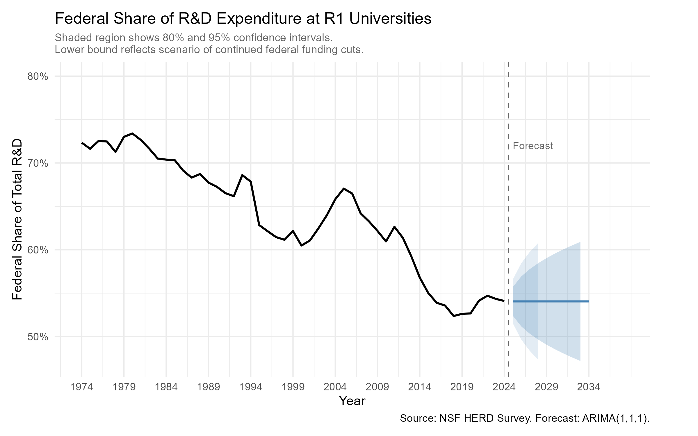
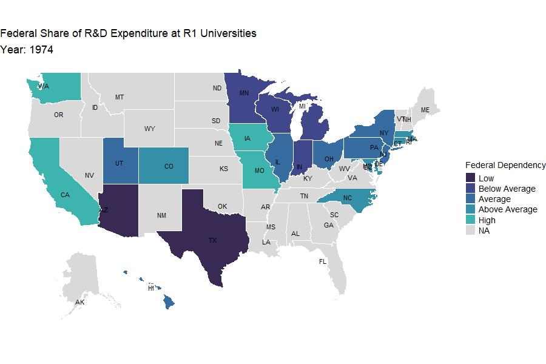

Federal Funding of R1 University Research Has Declined for Fifty Years – and Current Cuts Risk Accelerating the Trend
Executive Summary
Problem: Federal funding is the backbone of research at U.S. R1 universities, but the structural dependency of these institutions on federal dollars has never been systematically examined across the full arc of the modern research enterprise. As the Trump administration implements sweeping cuts to NIH, NSF, and other research agencies in 2025, understanding the depth and geography of that dependency is urgent for institutions, policymakers, and the public.
Approach: This analysis draws on five decades of data from the NSF Higher Education Research and Development (HERD) Survey — the authoritative source on U.S. university R&D expenditures — spanning 1974 to 2024. R1 institutions were identified using Carnegie Classification criteria appropriate to each era. Federal dependency was measured as the share of total R&D expenditure funded by federal sources, examined at both the national and state levels. A linear model characterizes the long-run trend; an ARIMA(1,1,1) model projects federal dependency forward through 2034 to contextualize the current funding crisis.
Insights: Federal funding as a share of R1 R&D expenditure has declined steadily from roughly 75% in the mid-1970s to approximately 55% in 2024 — a structural shift driven by growth in institutional, industry, and philanthropic funding rather than by absolute declines in federal investment. The decline is consistent across Carnegie classification eras, meaning it reflects long-term structural change rather than any single policy moment. An ARIMA forecast projects continued stabilization near 55%, but the 95% confidence interval extends as low as 47% — a scenario consistent with sustained federal cuts of the magnitude currently underway.
Significance: The map tells a story that a single number cannot: federal dependency is not uniform across states, and the institutions most exposed to federal cuts are concentrated in states whose congressional delegations have the most to lose. This analysis provides both the longitudinal context and the geographic specificity that policymakers and institutional leaders need to understand what is at stake.
Key Findings
- Federal funding accounted for approximately 75% of R1 R&D expenditures in the mid-1970s, declining to 55% by 2024 — a structural shift that unfolded across five decades regardless of Carnegie classification era. These figures are in nominal terms; adjusting for inflation would show an even steeper decline in federal purchasing power for R1 research.
- A linear model confirms a statistically significant decline of approximately 0.004 percentage points per year (p < 0.001, R² = 0.81), meaning year alone explains 81% of the variance in federal dependency — Carnegie classification cycles add no explanatory power beyond year.
- An ARIMA(1,1,1) forecast projects federal dependency stabilizing near 55% through 2034 under historical trends, but the lower bound of the 95% confidence interval reaches 47% — consistent with scenarios involving sustained federal funding cuts.
- State-level dependency varies substantially; states with a single dominant R1 institution are most exposed to federal funding volatility.
- The animated choropleth map reveals geographic concentration of high-dependency states, enabling institution- and district-level interpretation.
Research Question
How has federal funding as a share of total R&D expenditure at R1 universities changed over time, and which states face the greatest exposure to federal funding cuts?
Research Answers
National Trend in Federal Dependency
Federal funding has declined as a share of total R1 R&D expenditure since the 1970s, falling from roughly 75% to 55% over five decades. A linear model confirms the decline is statistically significant — approximately 0.004 percentage points per year (p < 0.001, R² = 0.81) — meaning year alone explains 81% of the variance in federal dependency. The decline is not explained by Carnegie classification cycles — the long-run downward trend is consistent across every era of the classification system, reflecting a structural shift in how R1 institutions fund research rather than responses to any particular policy change.
Figure 1. Federal share of R&D expenditure at R1 universities, 1974–2024, with ARIMA(1,1,1) forecast through 2034. Shaded regions show 80% and 95% confidence intervals.

Interpretation: The historical series shows a clear long-run decline punctuated by short-term fluctuations — most notably a temporary recovery around 2004–2006 and a sharp drop following 2010 as ARRA stimulus funds expired. These figures are in nominal terms; adjusting for inflation would show an even steeper decline in the real purchasing power of federal research dollars at R1 institutions. The forecast projects stabilization near 55% under historical trends, but the wide confidence interval reflects genuine uncertainty: the lower bound of the 95% interval reaches approximately 47%, which is consistent with scenarios involving sustained federal cuts of the magnitude currently being implemented. The flat central forecast is not reassurance — it is a baseline that assumes no structural break. The 2025 cuts are precisely such a break.
Geographic Distribution of Federal Dependency
Federal dependency is not uniform across states. The animated map shows each state’s federal share of R1 R&D expenditure relative to the national average in each year, classified into five natural groups using Jenks breaks on standardized scores.
Figure 2. Animated choropleth map of federal R&D dependency at R1 universities by state, 1974–2024. Darker colors indicate higher federal dependency relative to the national average. Grey indicates no R1 institution in the HERD data for that year.

Interpretation: High-dependency states — those consistently above the national average — tend to be home to institutions with large federal research portfolios concentrated in defense, health, and basic science. Low-dependency states often have strong industry partnerships or large institutional research funds that offset federal reliance. The temporal animation reveals that the geographic pattern of dependency has shifted over time, with some states moving from below-average to above-average dependency as their R1 institutions grew their federal portfolios faster than other revenue sources.
Benchmarking Federal Dependency Across States and Carnegie Cycles
Four tables characterize federal dependency patterns across states and Carnegie cycles.
Table 1. Federal dependency benchmark metrics by Jenks classification. Values represent state-year combinations across the full time series.
| Dependency Class | N (State-Years) | Mean | Min | Max |
|---|---|---|---|---|
| Low | 116 | 37% | 21% | 53% |
| Below Average | 414 | 48% | 34% | 65% |
| Average | 432 | 59% | 46% | 76% |
| Above Average | 386 | 69% | 56% | 88% |
| High | 254 | 79% | 63% | 95% |
Table 2. Highest and lowest federal dependency states by 2021 Carnegie cycle. Values are mean federal share of total R1 R&D expenditure per cycle. – indicates no R1 institution in HERD data for that cycle.
| State | 1973 | 1976 | 1987 | 1994 | 2000 | 2005 | 2010 | 2015 | 2018 | 2021 | Category |
|---|---|---|---|---|---|---|---|---|---|---|---|
| CO | 79% | 74% | 74% | 68% | 78% | 79% | 77% | 76% | 71% | 75% | High |
| OH | 65% | 62% | 56% | 57% | 58% | 60% | 81% | 79% | 81% | 78% | High |
| RI | – | – | – | 62% | 63% | 62% | 37% | 49% | 69% | 69% | High |
| AR | – | – | – | – | – | – | 27% | 28% | 29% | 36% | Low |
| ND | – | – | – | – | – | – | 33% | – | – | 27% | Low |
| NE | – | – | – | – | – | 36% | 41% | 33% | 34% | 33% | Low |
Table 3. Most sensitive states (highest SD), 1974–2024.
| State | Mean | SD |
|---|---|---|
| IA | 57% | 16% |
| TN | 69% | 15% |
| NC | 65% | 14% |
| WA | 71% | 14% |
| CA | 75% | 13% |
Table 4. Least sensitive states (lowest SD), 1974–2024.
| State | Mean | SD |
|---|---|---|
| VT | 66% | 2% |
| NM | 69% | 3% |
| ME | 48% | 3% |
| NV | 40% | 3% |
| MN | 55% | 3% |
Table 5. Biggest swings in federal dependency (highest range), 1974–2024.
| State | Min | Max | Range |
|---|---|---|---|
| IA | 33% | 90% | 57% |
| NC | 43% | 95% | 52% |
| TN | 41% | 89% | 48% |
| WA | 40% | 87% | 46% |
| CA | 51% | 91% | 40% |
Table 6. Smallest swings in federal dependency (lowest range), 1974–2024.
| State | Min | Max | Range |
|---|---|---|---|
| VT | 63% | 69% | 6% |
| WY | 38% | 48% | 10% |
| ME | 44% | 51% | 7% |
| NV | 35% | 43% | 8% |
| MN | 49% | 60% | 11% |
Next Steps
Three additional analyses are in progress using the HERD data to characterize the field-level and agency-level dimensions of federal dependency:
- Federal expenditures by field and agency — examining which research fields (life sciences, engineering, physical sciences, social sciences, and non-S&E fields) are most exposed to agency-specific cuts, particularly NIH, NSF, DOD, and DOE.
- Capital expenditures by field — examining infrastructure investment patterns as a downstream indicator of federal dependency.
- Type of R&D conducted — distinguishing basic research, applied research, and experimental development to identify where cuts fall hardest on the research pipeline.
Study Design
Data Source: NSF Higher Education Research and Development (HERD) Survey, the authoritative annual census of R&D expenditures at U.S. colleges and universities. Data span fiscal years 1974–2024 and include total and federally funded R&D expenditures by institution, source of funds, and field.
Data Handling: R1 institutions were identified using Carnegie Classification criteria appropriate to each historical era: top 50 institutions by federal grants received for 1974–1994 (the criterion used in the inaugural classification); Carnegie R1/Very High Research Activity designation for post-2010 data, matched to HERD via IPEDS unit ID. Pre-2010 institution names were matched to Carnegie using a combination of string normalization and fuzzy matching (Jaro-Winkler distance), with manual review of ambiguous cases. Federal dependency was calculated as the ratio of federally funded R&D expenditure to total R&D expenditure, aggregated to the state level by year.
Analytical Approach:
- Cleaned and standardized institution names across five decades of HERD data to enable consistent identification of R1 institutions.
- Filtered to R1 institutions using era-appropriate Carnegie criteria; matched pre-2010 data via fuzzy name matching and post-2010 data via IPEDS unit ID join.
- Calculated federal share of total R&D expenditure at the national level annually and at the state level annually.
- Applied z-score normalization within each year and Jenks natural breaks classification across all years to produce consistent dependency categories for the animated map.
- Fitted a linear model (federal share ~ year) to characterize the long-run trend; tested Carnegie cycle as an additional predictor.
- Fitted an ARIMA(1,1,1) model to the national time series and projected forward 10 years with 80% and 95% confidence intervals.
Project Resources
Repository: r1-federal-funding-dependency
Data: NSF HERD Survey data, available for download from the NCSES data portal. Raw data files are not included in the repository due to size; Carnegie classification data are included.
Code:
r1-federal-funding-dependency.R– full analysis pipeline: data wrangling, Carnegie matching, time series modeling, map and forecast figure generation
Project Artifacts:
federal-dependency-forecast.png– ARIMA forecast figurefederal-dependency-map.gif– animated choropleth mapfuzzy-match-inspect.csv– manual review file for pre-2010 institution name matching
Environment:
renv.lockandrenv/– restore withrenv::restore()
License:
- Code and scripts © Kara C. Hoover, licensed under the MIT License.
- Data, figures, and written content © Kara C. Hoover, licensed under CC BY-NC-SA 4.0.
Tools & Technologies
Languages: R
Tools: GitHub | Quarto
Packages: dplyr | stringr | stringdist | fuzzyjoin | ggplot2 | gganimate | forecast | classInt | urbnmapr | viridis | scales | tidyr | gifski
Expertise
Domain Expertise: higher education policy | federal research funding | time series analysis | geospatial visualization | data wrangling at scale
Transferable Expertise: This project demonstrates the ability to translate complex longitudinal institutional data into policy-relevant insights for non-technical audiences — combining rigorous statistical modeling with geographic storytelling to make a structural argument visible and actionable for decision-makers.